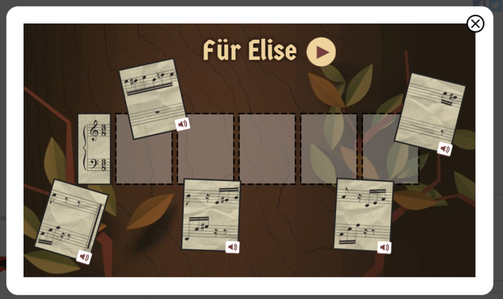
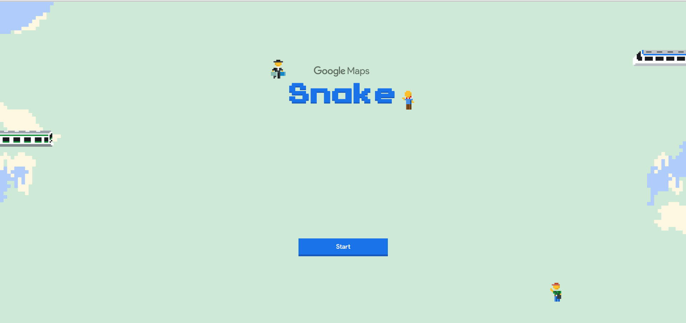
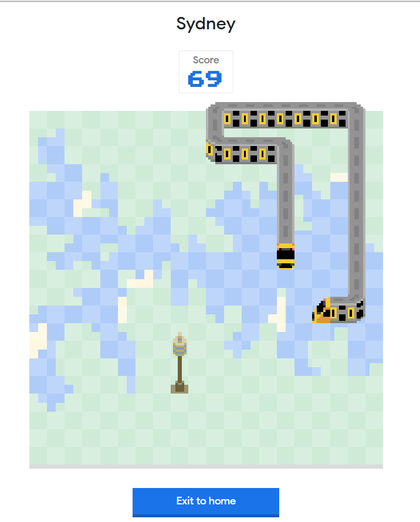
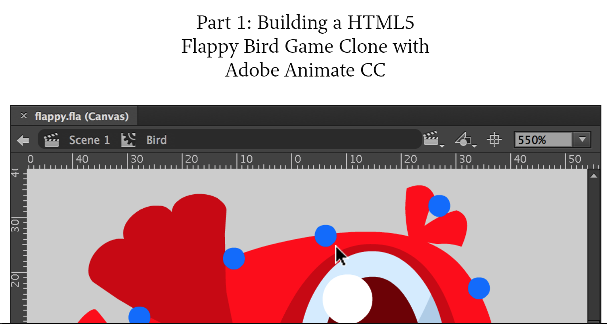
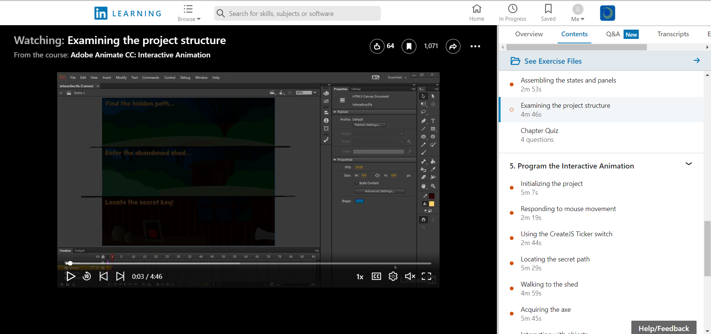
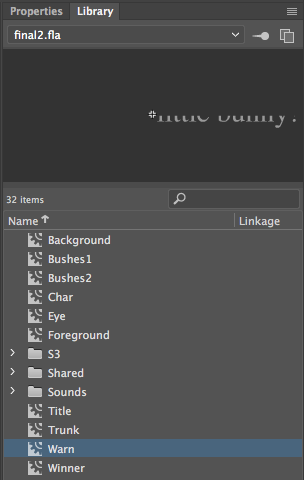

My ideas were all over the place when I started planning this project. I had ones where I have no idea how to start or do because I am still fresh with animation and with Javascript.
I had ended up trying to search up tutorials on how to create an interactive animation which was a struggle because there wasn't a lot. But a tutorial from In Learning helped me alot with creating this very simple animation which includes basic interactiveness.
|
 |
|
  |
|
 |
|
 |
Below is a screenshot of the ideas I had brainstormed. I originally wanted to create another version of the Snake game like the train game above. I had done it on C# in my programming class so I thought converting it an animation plus Javascript would be fun and easy. But it got really complicated especially since I don't have a lot of animation skills and on top of that, Javascript.
I had talked to some people in my class and some of them were using an online game maker. I tried to search for one that will help me create a snake type of game but it was unsuccessful since I don't have any experience creating those kinds of games with an online maker. So I went back to trying Adobe Animate. It's the software that we're learning and Javascript anyway so I didn't use an online game maker.
My animation this time around is very colorful as opposed to the last one I did. Since it is a very basic and short animation, I didn't want to take away the colorful because it could potentially get boring. The different colored bushes was an idea I got from the tutorial. I implemented it to this animation because I think it creates a layered effect which brings depth to the whole stage. It's also layered because I wanted the effect of it being furher away and for it to not just be a whole block of drawings.
As I had mentioned above, an In Learning tutorial had helped me create this animation. I had used their sounds for my sound effects. One of the reasons I had used their sounds is because I'm not sure where else I'd find sounds like these that won't be copyrighted. I also used some of their sprites which are the axe, pots and key. Other than that, I created everything else using the paintbrush, ellipse, rectangle and type tools.
Adobe Animate CC is the program I used for creating this animation. As I said previously in my other animation project, it is the industry standard so using this will help me gain more experience in case I needed to use it in the future. Another reason why I used this program is because it was too late for me to learn how to use some online game maker. It would've just wasted my time, and if I didn't use Animated, I wouldn't have learnt how to integrate Javascript with an animation.
Other than the tools I mentioned from my previous project (I won't mention again below), I became more aware of the tools that are available and how to actually use them. Thanks to the tutorial.
Creating the artwork and using tweens was so much easier this time around. But I learnt to use more of the features of Animate CC because I was following a very detailed and reliable tutorial which had been very helpful.
Putting the animation on the webpage was confusing. I didn't do it right last time so I tried to understand what was wrong. I literally thought you had to go File > Export but things weren't operating right when I do that this time. Then I figured that you just have to alter the publish setting, press Command + Enter (for MAC) then navigate to where you saved the files. All the files that you saved have to be moved to the portfolio folder and from them, access everything easily. The first time I did this, I didn't include the images and sounds folder and so my animation just appeared to be a black screen so I tried it again.
I like keeping my assets neat and tidy by putting them in appropriate folders and naming them properly. This helps me find the things I need right away. In my interactive app folder, I have .psd files placed in there because I had an idea for (other version) snake game. Then I also had the idea of making real photos come to life which I edited in Photoshop but it wouldn't work when I import it on Animate so I just left that idea.